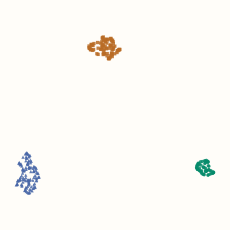
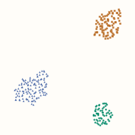
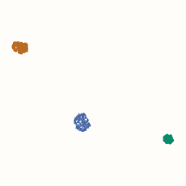
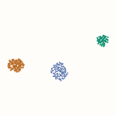

UMAP
UMAP builds a weighted neighbor graph, then learns coordinates for its vertices. Strong graph connections encourage points to sit together; sampled repulsive updates help prevent everything from collapsing. The resulting coordinates can support visualization or a smaller representation for a downstream task.
If you have read t-SNE, the idea of comparing input relationships with a plotted layout will feel familiar. Here we will focus on UMAP’s graph construction, the different roles of its two main controls, and its ability to place new observations into a fitted map.
Start with a local view around each point
Use five scalar inputs: A = 0, B = 1, C = 3, D = 6, and E = 10. For A, retain B, C and D as candidate neighbors. Their distances are 1, 3 and 6.
UMAP adjusts for the neighborhood around each anchor. Let $\rho_i$ be its distance to the nearest other point, and let $\sigma_i$ control how quickly connection strength decays beyond that distance. In this example, A has $\rho_A=1$. Its excess distances are therefore 0, 2 and 5.
For a retained candidate $j$, turn this excess distance into a directed edge weight:
Here $d(x_i,x_j)$ is the input distance. The nearest candidate gets weight 1 because its excess distance is zero. More distant candidates get smaller weights. A point outside the retained neighbor list gets weight zero, and we omit self-edges.
Anchor A: nearest-neighbor distance ρ = 1; fitted bandwidth σ ≈ 4.71055.
| Neighbor | Distance | Beyond ρ | Weight |
|---|
The bandwidth is fitted to a local calibration target. For A, this gives $\sigma_A\approx4.71055$ and weights about 1, 0.6540 and 0.3460. These are edge strengths, not a probability distribution over which single neighbor to choose. Their sum need not be one.
Optional: how the bandwidth is chosen, and why the code uses n_neighbors = 4
With default local connectivity and bandwidth settings, the calibration searches for a scale whose retained directed weights sum to $\log_2(k)$. In the umap-learn training convention reproduced here, the stored list has $k$ entries including the anchor itself. With $k=4$, three other candidates remain, and their target sum is $\log_2(4)=2$.
The search changes $\sigma_i$ until it reaches that target within numerical tolerance. Our five distinct inputs make this calculation straightforward. Duplicate points, tied nearest distances and numerical bandwidth floors require additional handling in a general implementation. The C++ companion states its narrower assumptions explicitly.
Combine the two directions into one edge
A’s view of C can differ from C’s view of A. Their local scales differ, and one endpoint may even omit the other from its candidate list. UMAP’s default fuzzy union combines the two strengths using
This is also $1-(1-w_{i\to j})(1-w_{j\to i})$: the same algebra as an “at least one” probability rule. It produces a symmetric strength between 0 and 1. If either direction has weight 1, the combined edge has weight 1.
For A–C, the two weights are approximately 0.6540 and 0.5. Their union is $0.6540+0.5-0.6540\times0.5\approx0.8270$. Click an edge or a pair button to inspect another calculation:
Schematic graph · these positions are not a learned embedding.
Python: reproduce the local weights and combined graph
import numpy as np
from scipy.optimize import brentq
from sklearn.neighbors import NearestNeighbors
x = np.array([0, 1, 3, 6, 10.])
k = 4 # The stored training list includes self; three other candidates remain.
distances, indices = NearestNeighbors(n_neighbors=k).fit(x[:, None]).kneighbors(x[:, None])
rho = distances[:, 1] # Nearest other point; all inputs here are distinct.
sigma = np.zeros(len(x))
W = np.zeros((len(x), len(x)))
for i in range(len(x)):
excess = np.maximum(0, distances[i, 1:] - rho[i])
# The bracket and target are suitable for this small example.
sigma[i] = brentq(lambda s: np.exp(-excess/s).sum() - np.log2(k), 1e-6, 100)
W[i, indices[i, 1:]] = np.exp(-excess/sigma[i])
U = W + W.T - W*W.T # Elementwise product, not matrix multiplication.
print(W[0]) # About [0, 1, 0.654045, 0.345955, 0].
print(U[0, 2]) # About 0.827023: combined A--C weight.
np.testing.assert_allclose(W.sum(axis=1), np.log2(k))
np.testing.assert_allclose(U, U.T)
Learn a layout for the graph
The graph is fixed before the layout optimization. Start with positions for its vertices—often from a spectral layout of the graph—then apply attractive updates along sampled edges and repulsive updates using sampled other vertices. Repeated updates produce the embedding.
The original UMAP formulation motivates these forces by comparing graph-edge strengths with distance-based strengths in the map. The implemented sampling scheme changes the balance of attraction and repulsion. Keep that distinction in mind when reading a full cross-entropy formula as an explanation of the software.
Optional: the map curve, the motivating loss, and the sampling distinction
Let $y_i,y_j$ be two map positions. A smooth curve converts their distance into an embedding strength $v_{ij}$. Positive shape parameters $a,b$ are fitted from min_dist and spread:
There is no global normalization of these strengths. For a fixed input edge strength $u$ and proposed map strength $v$, the binary cross-entropy term is
A strong input edge puts more weight on the attractive part, $-\log v$. A weak input edge puts more weight on the repulsive part, $-\log(1-v)$. If a pair’s strength were free to vary independently in this full objective, its optimum would be $v=u$. Real map positions couple all the pairs.
The usual implementation samples positive edges and negative vertices instead of enumerating all pairs. Its effective loss differs from the full cross-entropy expression; it is not simply an unbiased shortcut to that same objective. Damrich and Hamprecht (2021) analyze the resulting weighting. The formula here explains the attraction/repulsion idea, rather than claiming that every fitted $v$ should equal its input $u$.
n_neighbors changes the graph; min_dist shapes the layout
n_neighbors changes how broadly each point looks for relationships, including the local scale estimation. Small values emphasize a narrower neighborhood and can leave the graph fragmented. Larger values incorporate more surrounding structure, at the possible cost of local detail. Neither setting guarantees faithful global distances.
min_dist helps set the shape of the map’s distance-to-strength curve. Smaller values tend to permit tighter groups; larger values encourage more spread. It is a soft layout control, not a hard exclusion radius: two embedded points can be closer than min_dist.
Use the same 270 eight-feature observations from the t-SNE comparison. Here the seed stays fixed while the graph size and layout preference change. Within each fixed neighbor setting, both maps use the same input graph:




In these runs, changing only min_dist leaves the graph entries unchanged. Changing the neighbor count changes the graph itself. That gives us two separate questions to ask: which relationships should the graph include, and how tightly should the layout represent them?
Python: reproduce the maps and check the graph stays fixed across min_dist
import numpy as np
import umap
from sklearn.datasets import make_blobs
centers = np.zeros((3, 8))
centers[:, :2] = [[-6, 0], [0, 6], [6, 0]]
X, source_group = make_blobs(
n_samples=[60, 90, 120], centers=centers,
cluster_std=[0.3, 0.8, 1.3], random_state=17,
)
# These synthetic features already have comparable units.
embeddings, graphs = {}, {}
for neighbors in [5, 30]:
for min_dist in [0.05, 0.6]:
model = umap.UMAP(
n_neighbors=neighbors, min_dist=min_dist,
n_components=2, metric="euclidean", random_state=42, n_jobs=1,
).fit(X) # No labels supplied to this unsupervised fit.
embeddings[neighbors, min_dist] = model.embedding_.copy()
if neighbors in graphs:
np.testing.assert_allclose(graphs[neighbors], model.graph_.toarray())
graphs[neighbors] = model.graph_.toarray()
These figures were generated with umap-learn 0.5.12. The dense graph copies are only a check for this small dataset; retain the sparse representation when working with larger data.
Place new observations in a fitted map
Standard umap-learn supports transform after fitting. It relates new points to the stored training data and places them relative to the existing embedding. The training coordinates stay fixed; this is a different operation from fitting a new map on the combined dataset.
For a downstream prediction task, fit preprocessing and UMAP on training data, then transform validation or test features. Refit inside each training fold when selecting settings. The data-leakage chapter explains why held-out observations must not shape the fitted representation.
Python: fit training data and transform untouched observations
from sklearn.model_selection import train_test_split
# X is the synthetic feature matrix from the preceding example.
X_train, X_new = train_test_split(X, test_size=0.2, random_state=7)
mapper = umap.UMAP(n_neighbors=15, min_dist=0.1,
random_state=42, transform_seed=42, n_jobs=1).fit(X_train)
Z_train = mapper.embedding_.copy()
Z_new = mapper.transform(X_new)
np.testing.assert_array_equal(mapper.embedding_, Z_train)
print(Z_train.shape, Z_new.shape) # (216, 2) (54, 2).
The code leaves labels out of UMAP.fit. UMAP also supports supervised fitting when labels are supplied. In a classifier pipeline that forwards y to intermediate estimators, be explicit about whether that supervised representation is intended.
A transform is useful, but it is not evidence that an unfamiliar new observation belongs to a familiar cluster. Data outside the training distribution can be placed misleadingly. Evaluate the representation against the actual downstream task, with a suitable n_components; two coordinates are a plotting choice, not a general optimum.
What the map can and cannot establish
The plot-reading cautions from t-SNE apply here too: inspect original-space neighbors, try sensible alternative settings and seeds, and avoid treating island area or separation as calibrated geometry. UMAP’s graph construction and layout distort distances and density; an attractive map is not proof of a particular number of clusters.
The feature representation and metric determine the graph before any layout exists. Consult when to scale features when Euclidean distance would otherwise be dominated by numerical units. A larger graph, a different metric, or more output dimensions can change the answer; assess those choices with the question you want the representation to help answer.
Optional implementation: construct the local graph
This C++ companion computes the directed and merged graph for distinct scalar inputs. It sorts exact distances, fits each local bandwidth, then applies the union rule. It requires at least three stored neighbors and a unique nearest other point. It implements graph construction, not UMAP’s sampled layout optimizer.
C++17: local bandwidth search and fuzzy union
#include <algorithm>
#include <cmath>
#include <stdexcept>
#include <utility>
#include <vector>
using Matrix = std::vector<std::vector<double>>;
struct Graph { Matrix directed, combined; std::vector<double> rho, sigma; };
Graph build_graph(const std::vector<double>& x, std::size_t k) {
const std::size_t n = x.size();
if (k < 3 || k > n) throw std::invalid_argument("need 3 <= k <= row count");
for (double v : x) if (!std::isfinite(v))
throw std::invalid_argument("finite scalar inputs required");
Graph graph{Matrix(n, std::vector<double>(n)), Matrix(n, std::vector<double>(n)),
std::vector<double>(n), std::vector<double>(n)};
for (std::size_t i = 0; i < n; ++i) {
std::vector<std::pair<double, std::size_t>> neighbors;
for (std::size_t j = 0; j < n; ++j) if (i != j) {
double distance = std::abs(x[i]-x[j]);
if (!std::isfinite(distance)) throw std::overflow_error("distance overflow");
if (distance == 0) throw std::invalid_argument("distinct inputs required");
neighbors.emplace_back(distance, j);
}
std::sort(neighbors.begin(), neighbors.end());
neighbors.resize(k-1); // Self occupies the omitted stored-list entry.
double rho = neighbors[0].first;
if (neighbors[1].first == rho)
throw std::invalid_argument("this example requires a unique nearest neighbor");
double spread = neighbors.back().first-rho;
// Solve in relative units so the bisection is insensitive to scalar units.
auto mass = [&](double s) {
double sum = 0;
for (auto [distance, j] : neighbors) {
(void)j;
sum += std::exp(-((distance-rho)/spread)/s);
}
return sum;
};
double target = std::log2(static_cast<double>(k)), low = 0, high = 1;
while (mass(high) < target) high *= 2;
for (int step = 0; step < 80; ++step) {
double middle = (low+high)/2;
if (mass(middle) < target) low = middle; else high = middle;
}
double s = (low+high)/2, sigma = spread*s;
if (!(sigma > 0) || !std::isfinite(sigma))
throw std::overflow_error("unrepresentable bandwidth");
graph.rho[i] = rho; graph.sigma[i] = sigma;
for (auto [distance, j] : neighbors)
graph.directed[i][j] = std::exp(-((distance-rho)/spread)/s);
}
for (std::size_t i = 0; i < n; ++i)
for (std::size_t j = 0; j < n; ++j) {
double a = graph.directed[i][j], b = graph.directed[j][i];
graph.combined[i][j] = a+b-a*b;
}
return graph;
}
Call build_graph({0, 1, 3, 6, 10}, 4). The directed A row is approximately [0, 1, 0.654045, 0.345955, 0], and the combined A–C strength is about 0.827023. This dense, exact-neighbor implementation makes the steps inspectable; the library uses more general neighbor handling and sparse graphs.
References and further reading
- McInnes, Healy and Melville: UMAP — the original graph construction and layout formulation; Section 3 gives an algorithmic description.
- UMAP authors: How UMAP Works — local distance scales, connectivity and merging directed strengths.
- UMAP authors: Basic Parameters — the roles of neighborhood size, layout controls, distance metrics and output dimensions.
- UMAP authors: Transforming New Data — fitting training data and placing new points in the existing embedding.
- Damrich and Hamprecht: On UMAP’s True Loss Function — why sampled optimization has different weighting from the published full loss.